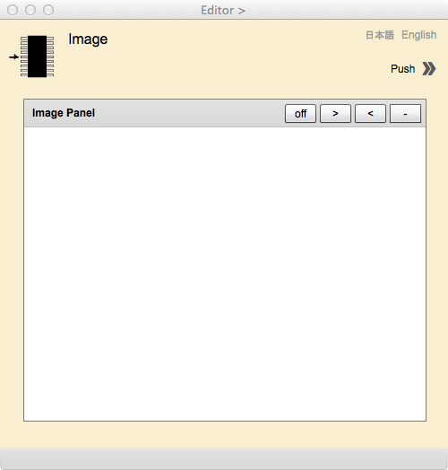
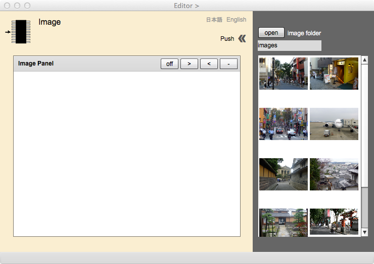
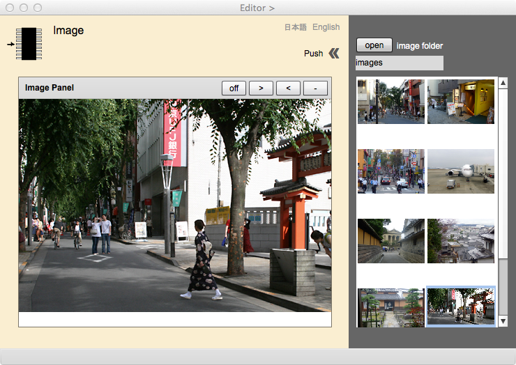

Image Viewer
画像ビュアー
このページは，Acquisition Manager との連携のもとで，地物や関連を画像として示す属性の取得と編集を行うためにあります．gittok では，地物は，画像を保存している場所を属性とします．ここではまず，画像の保存場所を，gittokはどのように扱うか説明し，次に，このページの操作手順を説明します．最後に表示欄とボタンそれぞれについて，説明します．
画像の保存場所
作業用フォルダーの下にimagesというフォルダーを設け，そこに全ての写真を格納しましょう．画像は，画像が保存されている場所を示す URL で表現します．kit 自体は画像を直にもつ訳ではなく，そのURLだけを保持します．従って，kitを別のパソコンに移動しても，写真は移りません．しかし，images フォルダーにまとめておき，作業用フォルダーごと，データを移せば，何の問題も発生しません．
操作画面

図1. Image Editor の初期画面
Edito ページのAttribute Type List からImageURLデータ型をとる属性を選択すると，最初に現れるのが，このページである．画像を選択するには，右上にある >> マークを押す．

図2. 画像一覧を出したImage Viewer
右側に伸びたパートは，画像一覧を表示するためにある．ここで，openボタンを押して，画像が入ったフォルダーを選択する．このフォルダーは，作業用フォルダーの中に設けるimagesとすることを推奨する．

図3. 画像一覧から画像を選択して表示した Image Viewer
画像一覧の中から一枚の画像を選び，画像の上にカーソルをもっていってクリックすると，その画像がImage Panelにあらわれる．これを地物インスタンスの属性にする場合は，Editor ページのAttribute ID Value List の下にあるadd ボタンを押せばいい．
表示欄
Image folder
画像ファイルが格納されているフォルダーの名前が表示されます．
ボタン
Push >>
画像一覧用のパートが表示される．隠すときも同じボタンを押す．
off/on
画像の移動を可能にするときはon，そうでないときはoffにする．
>
このボタンを押すと画像が縮小される．
<
このボタンを押すと，画像が拡大される．
-
このボタンを押すと，表示される画面縮尺が，初期化される．
日本語
今あなたが読んでいるドキュメントが表示されます．
English
You can read the tutorial written in English.